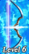
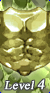
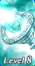

1골드포스 활성 vs 비활성
같은 아이템·같은 레이아웃에서 골드포스만 다르다. 차이가 한눈에 읽히는가, 그리고 아웃라인을 지워도(색각 이상·모션 감소) 여전히 읽히는가를 같이 본다.
골드포스 활성 · goldforceActive: true
 골드포스
적용됨, 남은 기간 12일
불
골드포스
적용됨, 남은 기간 12일
불
골드포스 없음 · goldforceExpireAt: null
불
접근성: 색 단독 전달 금지. 골드 아웃라인은 보조 신호다.
정보 자체는 세 경로로 전달된다. ① 슬롯 좌상단 "골드포스" 배지, ② 본문의
"골드포스 N일 남음" 줄, ③ 스크린리더용 sr-only 보충 텍스트.
아웃라인을 전부 제거해도 정보 손실이 없어야 한다는 것이 합격선이다.
2아웃라인 변형 3안
가장 큰 갈림길은 굵기·속도가 아니라 아웃라인을 어디에 두는가다. A·B 는 원본대로 아이템 아트를 감싸고(검정 슬롯 안 = 아이템 계층에 갇힘), C 는 카드 전체를 감싼다(눈에 띄지만 골드가 UI 테두리처럼 읽힐 위험).
A안 · 원본 충실 · 아트 프레임

골드포스 적용됨, 남은 기간 9일 물- 굵기
- 2px + 안쪽 1px 베벨(원본 구조 그대로)
- 셰인
- 좁은 띠(9%) · 흰색 95%
- 주기
- 3s (움직임 0.9s + 정지 2.1s)
- 성격
- 또렷하고 게임 느낌이 남는다. 대비가 세서 그리드에 여러 장이면 시선이 분산될 수 있다.
B안 · 커머스 절제 · 아트 프레임
- 굵기
- 1.5px · 베벨 없음
- 셰인
- 넓고 흐린 띠(16%) · 흰색 62%
- 주기
- 4.8s (움직임 1.4s + 정지 3.4s)
- 성격
- "금테" 자체는 남고 반짝임은 스쳐 지나간다. 20장 그리드에 여러 장 섞여도 견딘다.
C안 · 카드 프레임 강조 · 카드 전체
- 굵기
- 2px · 카드 외곽 8px 반경
- 셰인
- 중간 띠(11%) · 흰색 100%
- 주기
- 2.4s (움직임 0.7s + 정지 1.7s)
- 성격
- 골드가 카드 테두리 = UI 크롬으로 읽힌다. 원본(아트 테두리)과도 다르고 Containment 취지와 마찰이 있다. 비교용으로 넣었다.
Containment(§1.2) 관점. 게임 원본 노트는 "아이템 테두리에 gold.png 적용"이라고 못박는다. 즉 원본에서도 골드는 아이템 아트의 것이지 패널의 것이 아니다. A·B 는 검정 슬롯 안쪽에 갇혀 카드 테두리·버튼·헤더와 물리적으로 접촉하지 않는다. C 는 카드 외곽선을 골드로 바꾸므로 표면 경계(크롬)에 게임색이 닿는다. 기술적으로는 아이템 카드 안이지만, 읽히기로는 크롬이다. 이 프로토타입의 핵심 질문이다.
3실제 목록: 20장 중 골드포스 2장
효과는 단독으로 보면 늘 예뻐 보인다. 판단은 목록에서 해야 한다. 골드포스가 적절히 눈에 띄는가, 아니면 나머지 18장을 눌러버리는가. 상단 전량 골드포스 토글로 최악의 경우(20장 전부)도 확인하라.
성능. 애니메이션 속성은 transform 하나뿐이고 링의 금 그라데이션은 정적 배경이다.
box-shadow·filter·background-position 애니메이션은
매 프레임 페인트를 유발하고 특히 box-shadow 는 블러 반경만큼 무효화 영역이 커져
20장에서 가장 먼저 무너진다. 전부 배제했다.
추가로 한 주기의 30%만 움직이고 70%는 정지시켜(duty cycle) 동시에 실제로 그려지는 카드 수를 줄였다.
will-change 는 움직이는 자식 하나에만 건다(부모 20개에 걸면 레이어가 폭증한다).
운영 반영 시: IntersectionObserver 로 뷰포트 밖 카드의 애니메이션을 멈추는 것을 권한다(이 프로토타입엔 미포함).
4만료 임박 표현이 필요한가
골드포스는 시간제라 goldforceExpireAt 에서 잔여가 파생된다(D-066: 시세 집계 키에서는 제외, 필터로만).
구매자에게 "내가 사면 얼마나 남아 있나"는 실제 가치 판단 정보다. 잔여를 숨기면 안 된다.
다만 긴급성을 연출하면 가짜 압박이 된다(PRODUCT.md 반-레퍼런스). 3단계만 제안한다.
여유 · 24시간 초과

골드포스 적용됨, 남은 기간 21일 땅임박 · 24시간 이내
warning)은 보조일 뿐 정보는 문구가 나른다. 아웃라인은 건드리지 않는다.
깜빡이게 만들면 가짜 긴급성이 된다.만료됨 · goldforceActive: false
미결. 임박 기준을 24시간으로 둘지, 그리고 목록 카드에도 잔여를 표시할지 아니면 상세에서만 보일지는 사용자 판단 사안이다. 목록에 잔여를 노출하면 "골드포스 12일" 같은 문자열이 20장에 반복돼 밀도가 올라간다. 대안: 목록은 배지만(잔여 없음), 상세는 정확한 만료 시각.
5모션 감소 폴백
상단 모션 감소 시뮬레이션 토글을 켜 보라(OS 설정 prefers-reduced-motion: reduce 와 동일하게 동작한다).
흐르는 흰 띠만 사라지고 정적 골드 그라데이션 링과 배지·본문줄은 그대로 남는다.
정지 상태에서도 골드포스임이 읽혀야 한다는 조건을 이 구조가 만족한다. 정보는 애초에 애니메이션이 아니라
링과 텍스트에 실려 있기 때문이다.
정지 상태 · 흰 셰인 제거 · 링과 텍스트만

골드포스 적용됨, 남은 기간 5일 바람6사용자 판단이 필요한 것
② 강도: A(또렷) vs B(절제). 3번 그리드에서 20장 깔린 상태로 보고 정하는 게 맞다.
③ 속도: 원본
.spr 에 시간 정보가 없어 복원 불가. 2.4s / 3s / 4.8s 는 제안값이다.④ 잔여 노출 범위: 목록에도 "N일 남음"을 쓸지, 목록은 배지만 두고 상세에서만 시각을 보일지.
⑤ 토큰 승격: 골드를
design-system.md 토큰으로 올릴지. 이 파일은 아직 지역 변수로만 쓴다.⑥ 전용 아트:
card_image/gold_force/ 에 골드포스 전용 카드 아트 9종이 따로 있다.
아웃라인 대신(혹은 함께) 이 아트를 쓸지는 도메인 의미 확인이 먼저다.
"골드포스 상태의 표시"인지 "별도 아이템 종류"인지 아직 확정되지 않았다.